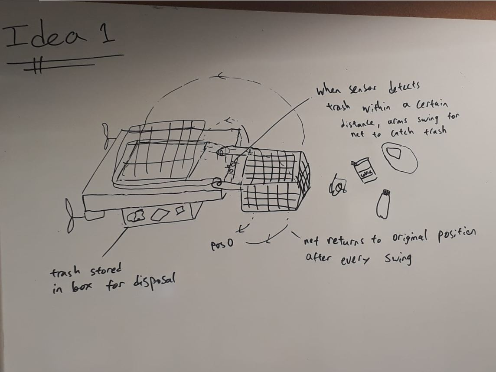
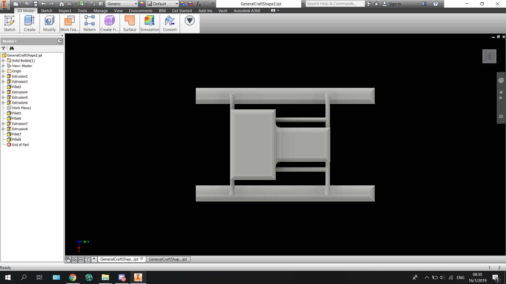
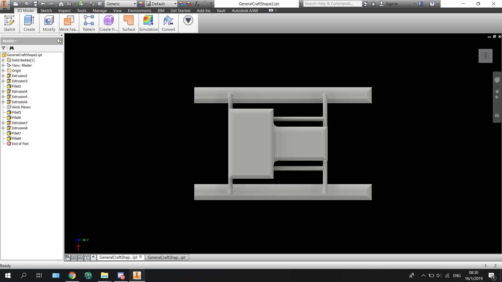
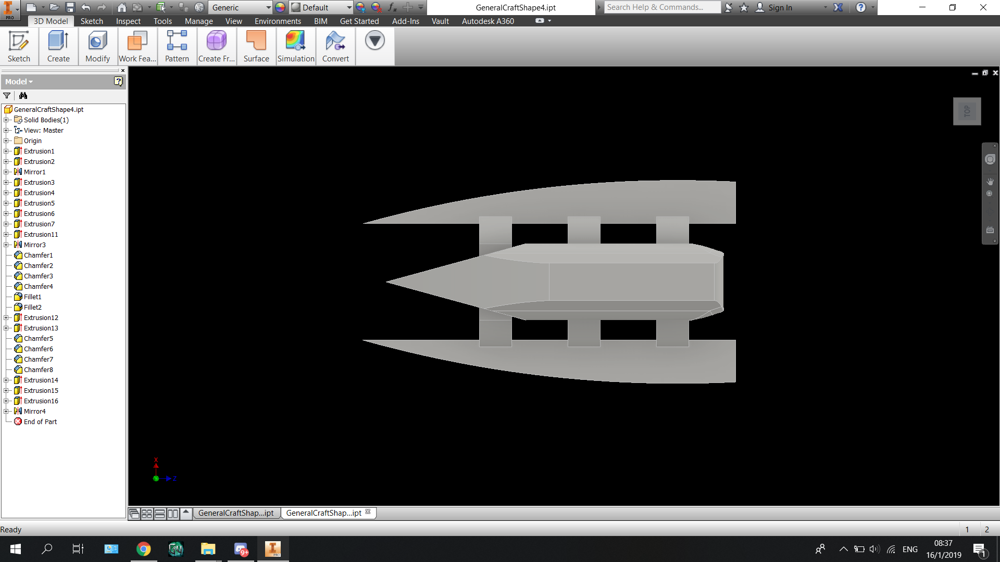
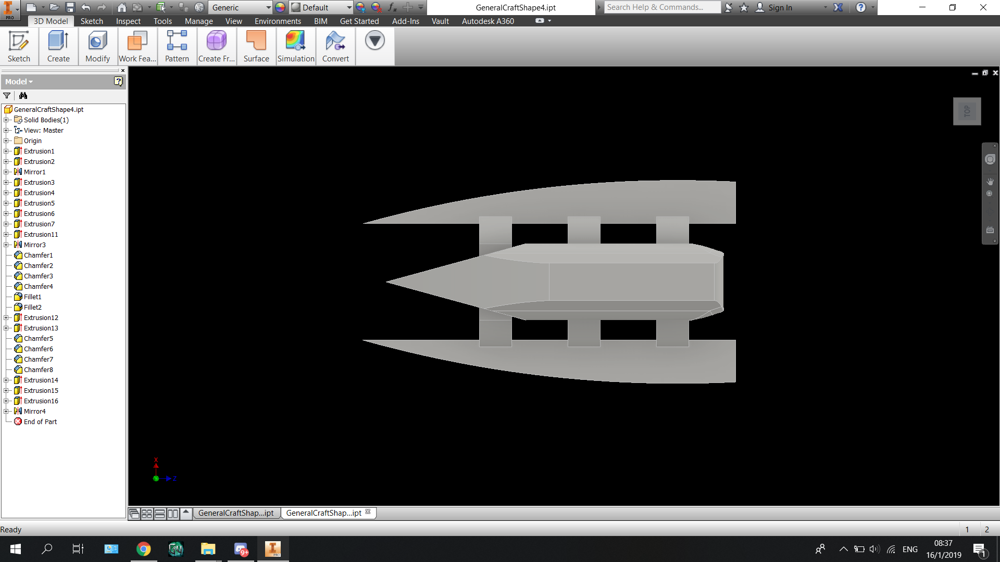

Design Process
Specification Sheet
Brainstorming
Idea 1: Ocean Trash Collector
Idea 2: Fish Bite Detector

Idea 3: Moblie Carbon Filter

Idea 4: Water Jet Dish Washer

Idea 5: Fish Detector and Bait Dispenser
 Idea 5 was choosen for our prototype, here is our ideation process for the choosen idea:
Idea 5 was choosen for our prototype, here is our ideation process for the choosen idea:
Ideation
Ideation sketch 1:

Ideation sketch 2:

Prototyping


Mechanical Design Concepts
Draft 1


Draft 2
 


Draft 3

Draft 4
 


Draft4's design was choosen for the final prototype as it has a streamlined shape and and electronics are a safe height from water level
Mechanical Design Decisions
- Here
Detailed Information on our mechanical design choices for the craft can be found